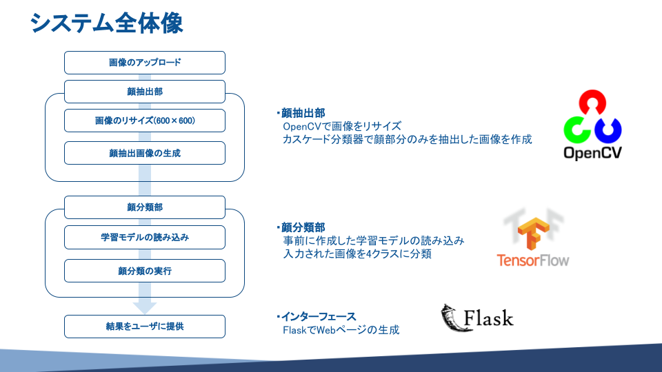
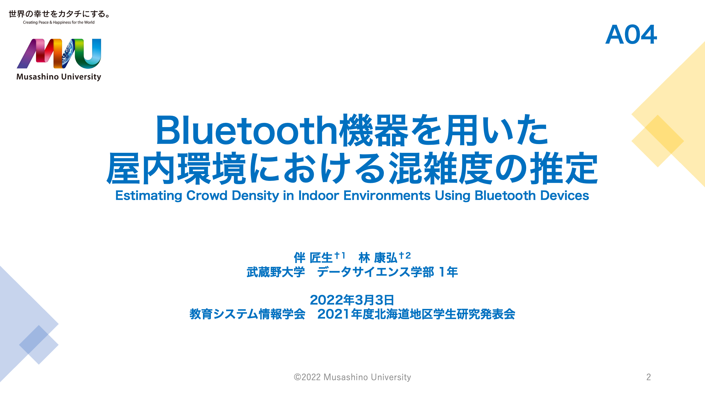
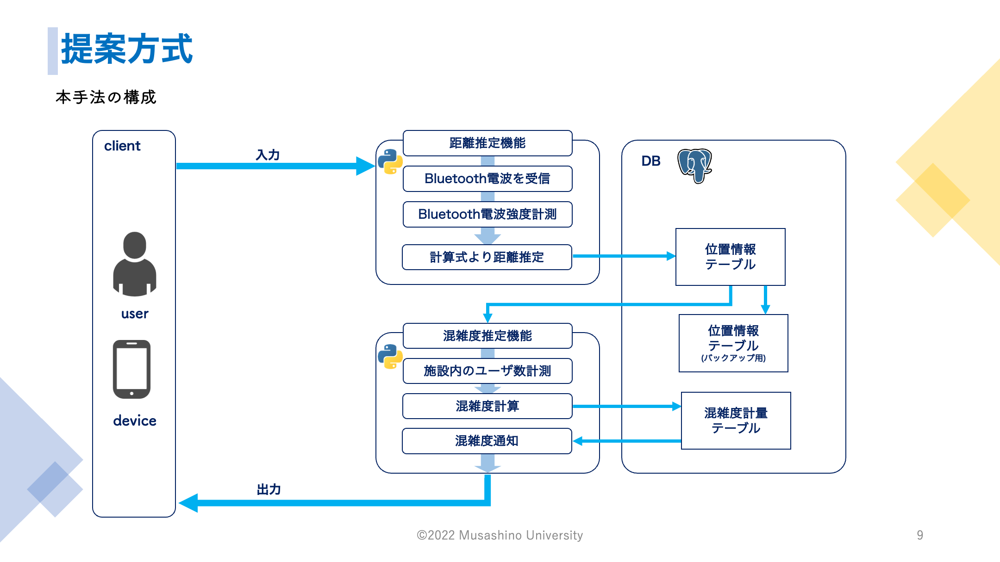
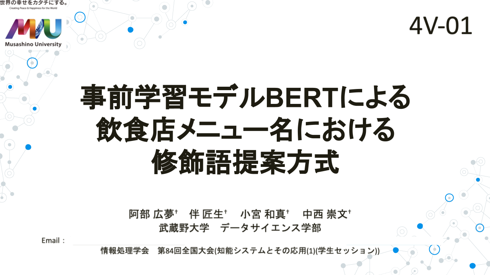
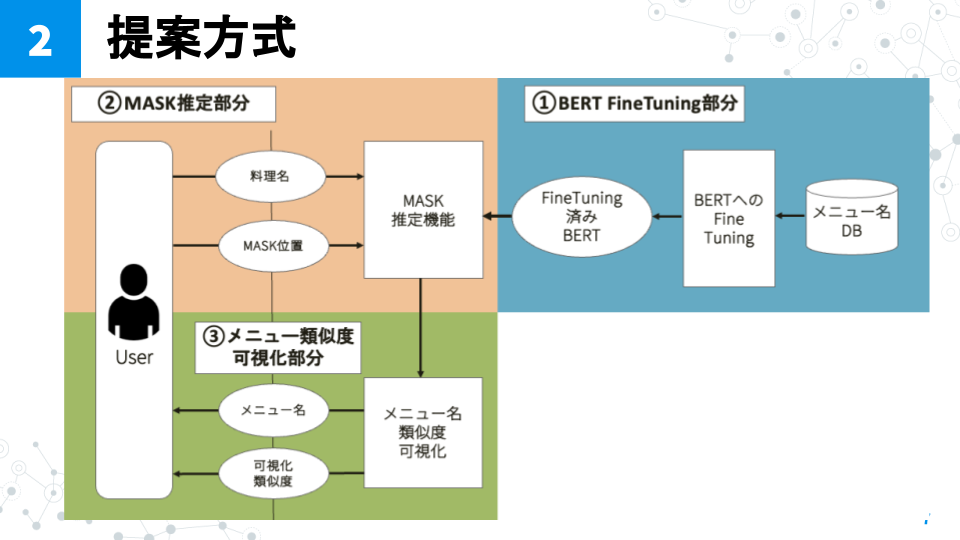

有明キャンパス
夢の大橋(有明)
CNNを用いて4つの顔タイプに分類する学習モデルを作成
発表タイトル: Bluetooth機器を用いた屋内環境における混雑度の推定
北海道支部特別賞を受賞
Bluetoothの電波から空間内の混雑度計量を行い、ユーザの利用意図に最も合う施設を選べるようにすることを目指した
|  |  |
発表タイトル: 事前学習モデルBERTによる飲食店メニュー名における修飾語提案方式
BERTのMASK推定機能と作成した事前学習モデルから魅力的な飲食店のメニュー名を自動生成することを目指した
|  |  |